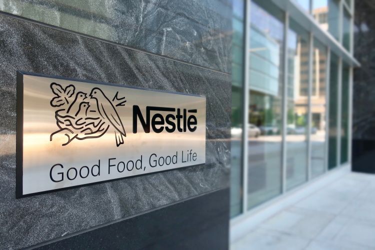

Nestlé S.A. es una empresa multinacional suiza de alimentos y bebidas con sede en Vevey, Vaud, Suiza. Ha sido la empresa de alimentos más grande del mundo, medida por los ingresos y otras métricas, para 2014, 2015 y 2016. Se clasificó en el número 72 de la lista Fortune Global 500 en 2014 y en la edición 2016 de Forbes Global 2000 de las empresas públicas más grandes.
Los productos de Nestlé incluyen alimentos para bebés, comida médica, agua embotellada, cereales para el desayuno, café y té, confitería, productos lácteos, helados, alimentos congelados, alimentos para mascotas y aperitivos. Veintinueve de las marcas de Nestlé tienen ventas anuales de más de 1000 millones de dólares, incluyendo Nespresso, Nescafé, Kit Kat, Smarties, Nesquik, Stouffer, Vittel y Maggi. Nestlé cuenta con 447 fábricas, opera en 194 países y emplea a unas 339.000 personas. Es uno de los principales accionistas de L'Oréal, la compañía de cosméticos más grande del mundo.

Nestlé se formó en 1905 por la fusión de Anglo-Swiss Condensed Milk Company en Estados Unidos, establecida en 1866 por los hermanos George y Charles Page, y Farine Lactée Henri Nestlé, fundada en 1866 por Henri Nestlé. La compañía creció significativamente durante la Primera Guerra Mundial y nuevamente después de la Segunda Guerra Mundial, ampliando sus ofertas más allá de sus primeros productos de leche condensada y fórmula infantil. La compañía ha realizado una serie de adquisiciones corporativas, incluidas Crosse & Blackwell en 1950, Findus en 1963, Libby's en 1971, Rowntree Mackintosh en 1988, Klim en 1998 y Gerber en 2007.